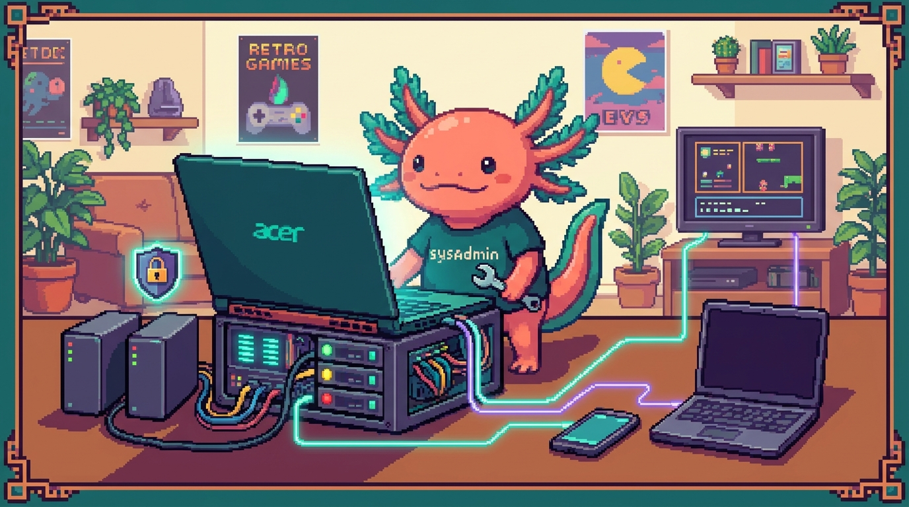

Módulo 09 — NAS y servidores

Objetivo del módulo: entender servidores y redes desde cero, partiendo de tu NAS real, el
polypaw-nas: un laptop Acer Nitro convertido en servidor con Ubuntu. Aprenderás qué es un servidor, Linux, cómo compartir archivos, redes, acceso remoto seguro, y cómo montar uno tú mismo entendiendo cada decisión.
Este módulo es distinto a los anteriores: no es un lenguaje de programación, es infraestructura: las computadoras que hacen funcionar todo por detrás. Es el complemento perfecto a la programación, y te abre un mundo enorme (el self-hosting, tener tus propios servicios en casa).
Tu equipo real (lo usamos como ejemplo en todo el módulo)
🖥️
polypaw-nas— un Acer Nitro AN515-54 (laptop gaming) reconvertido en servidor: - CPU Intel Core i5-9300H (4 núcleos / 8 hilos), 8 GB de RAM. - Discos: SSD NVMe de 238 GB (sistema) + HDD de 954 GB (datos, en/srv/nas). - Sistema: Ubuntu Server 26.04 (Linux, sin escritorio). - Software: Samba (comparte la carpetaPolyPawNAS), Cockpit (panel web en el puerto 9090), Tailscale (red privada para acceso remoto), AdGuard Home (bloqueo de anuncios por DNS), y Docker/Podman instalados. Encima corre tu compañía de agentes OpenClaw. - 💡 Al ser laptop, su batería funciona como UPS (si se va la luz, no se apaga).
¿Qué vas a poder hacer al terminar?
- Explicar qué es un servidor y qué es un NAS, y por qué un laptop sirve como tal.
- Moverte por Linux/Ubuntu Server por terminal (usuarios, permisos, discos, servicios).
- Entender y administrar Samba (compartir archivos) y Cockpit (panel web).
- Entender redes desde cero: IP, DNS, puertos, LAN vs internet.
- Acceder a tu NAS de forma segura desde fuera con Tailscale (VPN), y saber qué hace AdGuard.
- Usarlo para tus proyectos (respaldos, contenedores) y montar uno desde cero.
Capítulos
| # | Capítulo | Qué cubre |
|---|---|---|
| 01 | ¿Qué es un servidor y un NAS? | Servidor, NAS, tu Acer reconvertido, UPS |
| 02 | Linux y la terminal del servidor | Ubuntu Server, usuarios/permisos, systemd, discos/LVM |
| 03 | Compartir archivos con Samba | Protocolo SMB, recurso PolyPawNAS, conectarse |
| 04 | Redes desde cero y acceso remoto | IP/DNS/puertos, Cockpit, Tailscale (VPN), AdGuard |
| 05 | Usarlo y montar uno desde cero | Respaldos, Docker, self-hosting, guía de instalación |
| 06 | Linux a fondo para tu servidor | root/sudo, usuarios, permisos, chmod/chown, /etc |
| 07 | Discos y almacenamiento | lsblk, df, montar, /etc/fstab, SSD vs HDD, SMART |
| 08 | systemd y los servicios | systemctl, journalctl, smbd/cockpit/tailscaled |
| 09 | Samba a fondo | smb.conf, recurso PolyPawNAS, conectarse desde todo |
| 10 | Redes desde cero a fondo | IP privada/pública, puertos, gateway, IP fija |
| 11 | Acceso remoto seguro con Tailscale | VPN, WireGuard, tailnet, IP 100.x, MagicDNS |
| 12 | Administración web: Cockpit y AdGuard | Panel :9090, recursos, AdGuard DNS anti-anuncios |
| 13 | Docker y autoalojamiento | Contenedores, imágenes, volúmenes, self-hosting |
| 14 | Respaldos, mantenimiento y seguridad | Regla 3-2-1, rsync, cron, SSH con llave, ufw |
| 15 | Montar tu NAS desde cero (guía) y glosario | Guía completa paso a paso + todos los términos |
✅ Módulo 09 — versión ampliada (capítulos 01–15, ~100 páginas). Basado en tu NAS real
polypaw-nas.
➡️ Empieza por Capítulo 01 — ¿Qué es un servidor y un NAS?.